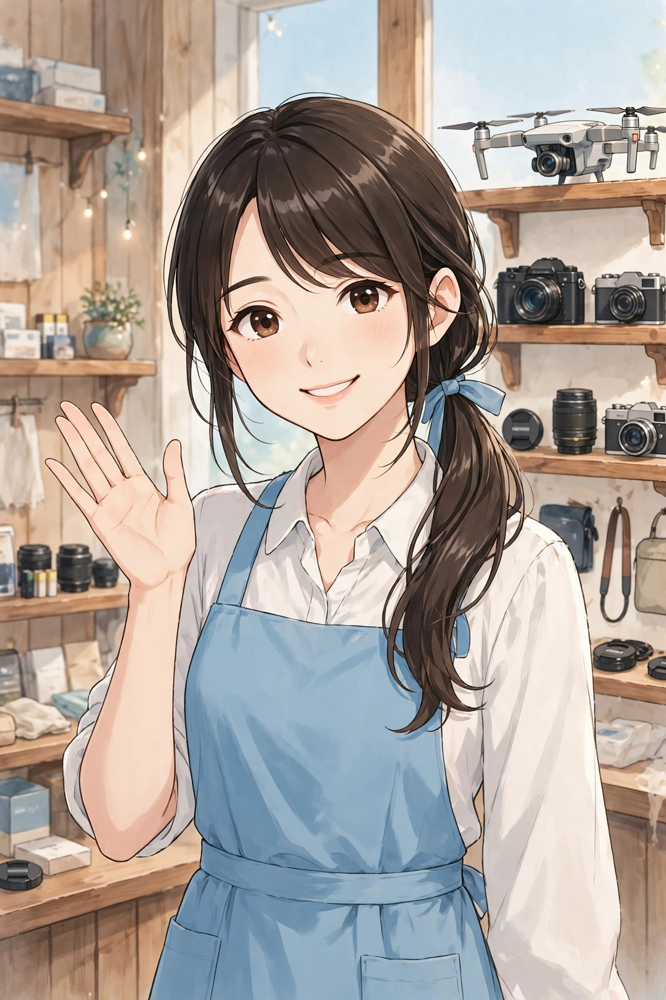
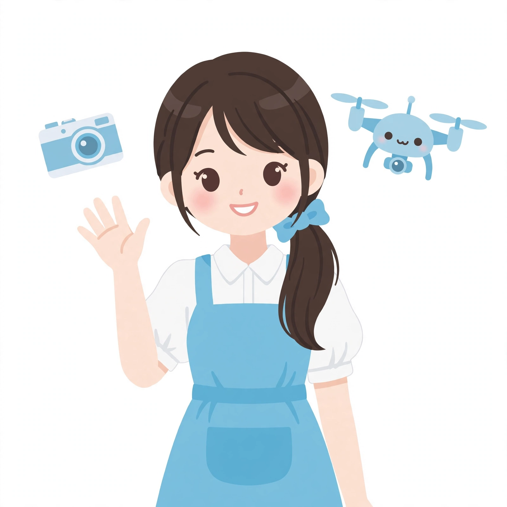

現場写真の仕上げに、私がPhotoDirector 365を使い続ける理由
引き渡し前の記録写真や点検写真の仕上げに、実際に現場で使っている編集ソフトの話です。明るさ補正と一括処理が、毎日の作業をどれだけ軽くするか。
ミューのひとこと：店主が毎日使っている本命ソフトです。写真の枚数が多い現場ほど、ありがたみが分かりますよ。

空撮・現場記録・写真と動画の仕上げ。現場監督28年の店主が選んだ道具を、看板娘ミューがご案内します。

このお店の2つの柱ドローン本体やカメラ、撮影を支える機材、そして写真・動画の仕上げソフトまで。「撮る」まわりで実際に使っている道具と、現場目線で調べた道具を紹介します。
記録・整理・伝達といった現場の「しごと」を軽くするガジェットやAIツール。監督の仕事を28年やってきた店主の目で、使えるものを選んでいきます。
引き渡し前の記録写真や点検写真の仕上げに、実際に現場で使っている編集ソフトの話です。明るさ補正と一括処理が、毎日の作業をどれだけ軽くするか。
チビミュー＠ソラ撮り道具箱 審査中・近日公開
看板娘チビミューのLINEスタンプ（全16種）を準備中です。あいさつから「とばすよ！」まで、現場と日常に使えるスタンプです。販売が始まったら、ここでお知らせします。
SoRaCaLLa（ソラカラ）
一級建築施工管理技士／二級建築士／二等無人航空機操縦士。大手ハウスメーカーで28年、新築工事の現場監督を務めました。いまは現場のDXと、空撮・道具の情報発信をしています。
お問い合わせ：mente.app@outlook.jp